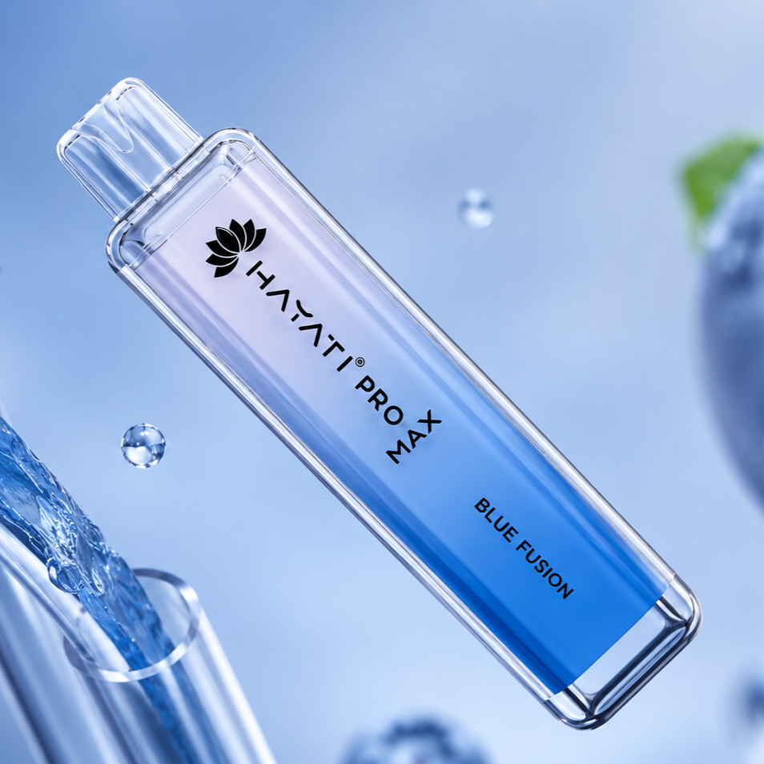
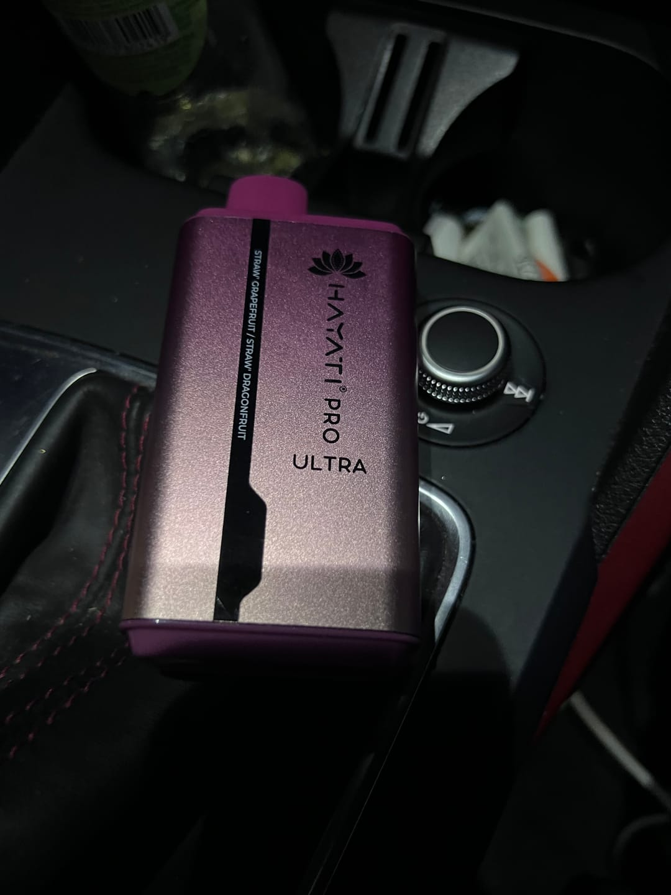
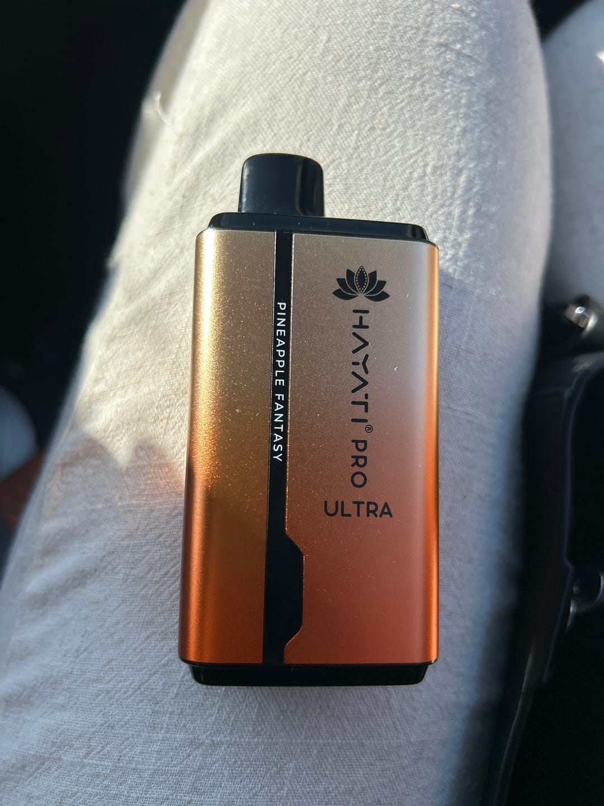
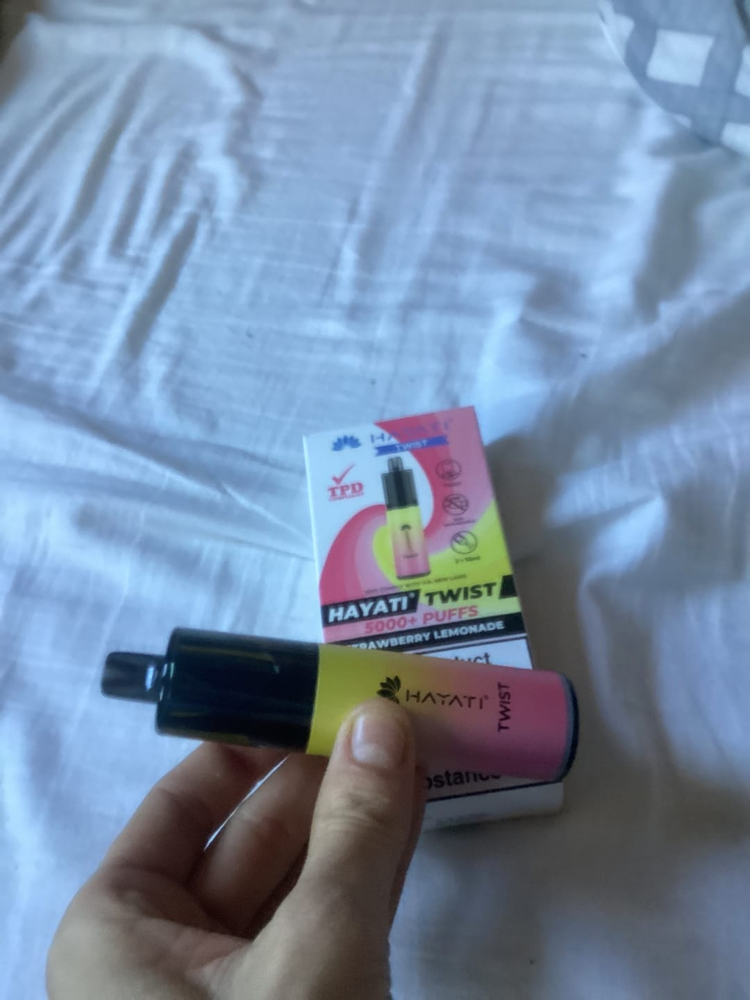

Hayati Vapes Descartáveis
A Hayati apresenta uma gama completa de vapes descartáveis premium, com destaque visual para os produtos, estilo moderno e uma estrutura pensada para personalização fácil.

Hayati Pro Max 4K Puffs
Hayati Pro Max 4K Puffs | Vape Descartável Portugal 0% Nicotina. Um vape descartável pronto a usar, criado para oferecer sabor intenso, formato slim e uma experiência simples sem manutenção.
| Característica | Especificação |
|---|---|
| Puffs (Tragadas) | 4000 puffs (4K) |
| Nicotina | 0% (Sem nicotina) |
| Bateria | 1400 mAh (Alta densidade) |
| Tecnologia | Mesh Coil (Resistência de Malha) |
| Ativação | Automática por inalação |
| Carga | Não recarregável (Pronto a usar) |
Como Funciona
A Hayati redefine a experiência de vape com dispositivos premium criados para quem procura qualidade, design moderno e sabores intensos. Estes vapes descartaveis combinam tecnologia avançada, elevado desempenho e utilização simples para oferecer uma experiência de vapping suave e consistente do início ao fim.
Cada cigarro eletronico Hayati foi desenvolvido para proporcionar mais sabor, mais vapor e milhares de Tragadas com máxima eficiência. Graças à tecnologia Mesh Coil e às baterias recarregáveis, os dispositivos garantem sabores de vape mais puros e vapor consistente em cada utilização. Existem opções com nicotina e sem nicotina para diferentes estilos de vaper.
Desde modelos compactos até versões premium com até 15000 Tragadas, a linha Hayati adapta-se a todos os utilizadores de vape portugal. Estes vape descartável oferecem praticidade, autonomia e um visual elegante pensado para os verdadeiros vapers modernos. Descobre uma nova geração de cigarro eletrónico descartável criada para quem procura inovação, desempenho e os melhores sabores num vape shop moderno.
Hayati Cigarros Eletrónicos
Hayati Pro Max 4K Puff Sem Nicotina
Hayati Pro Ultra 15K Puff
Hayati Twist 5K Puff
Hayati Pro Ultra 15K Puff Sem Nicotina
FAQ
Sim, este cigarro eletrónico descartável está disponível na versão sem nicotina, ideal para utilizadores que procuram desfrutar de sabores de vape intensos sem consumir nicotina.
O Hayati Pro Ultra 15K oferece até 15000 Tragadas, tornando-se um dos vapes descartaveis de longa duração mais procurados em vape portugal.
Não, é muito intuitivo. Basta um simples giro manual no topo do dispositivo para alternar entre os dois sabores disponíveis no mesmo vape.
Permitem desfrutar do sabor e do hábito social do vape sem a ingestão de nicotina, sendo ideais para quem está a reduzir o vício ou prefere apenas o aroma.
Avaliações de Clientes

Marta P.
O Hayati Pro Ultra 15000 superou totalmente as minhas expectativas. O sabor mantém-se intenso até às últimas Tragadas e o ecrã digital dá um toque muito premium ao vape.
Beatriz R.
Adorei o Hayati Pro Max 4K sem nicotina. Vapor suave, sabores de vape incríveis e bateria com ótima duração para um vape descartável compacto.

Sofia C.
A qualidade deste cigarro eletronico é excelente. O vapor é suave, o airflow funciona muito bem e os sabores de vape são dos melhores que já experimentei.

Daniela G.
Excelente cigarro eletrónico descartável para o dia a dia. Muitas Tragadas, sabores intensos e entrega rápida. Recomendo a qualquer vaper que procure qualidade premium.